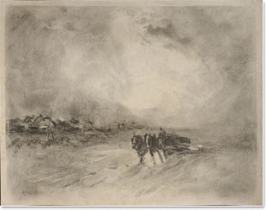

Shown here are some of Augustus Kenderdine's landscape works.
A painting of Waskesiu.
A closeup of Kenderdine's "Bathers" work.
A work based on Echo Lake.

Kenderdine's work "Going Home" restored.
Kenderdine's portrait of Norman MacKenzie.
One of his other landscapes named "The Buffalo Hunt".
His own self-portrait.